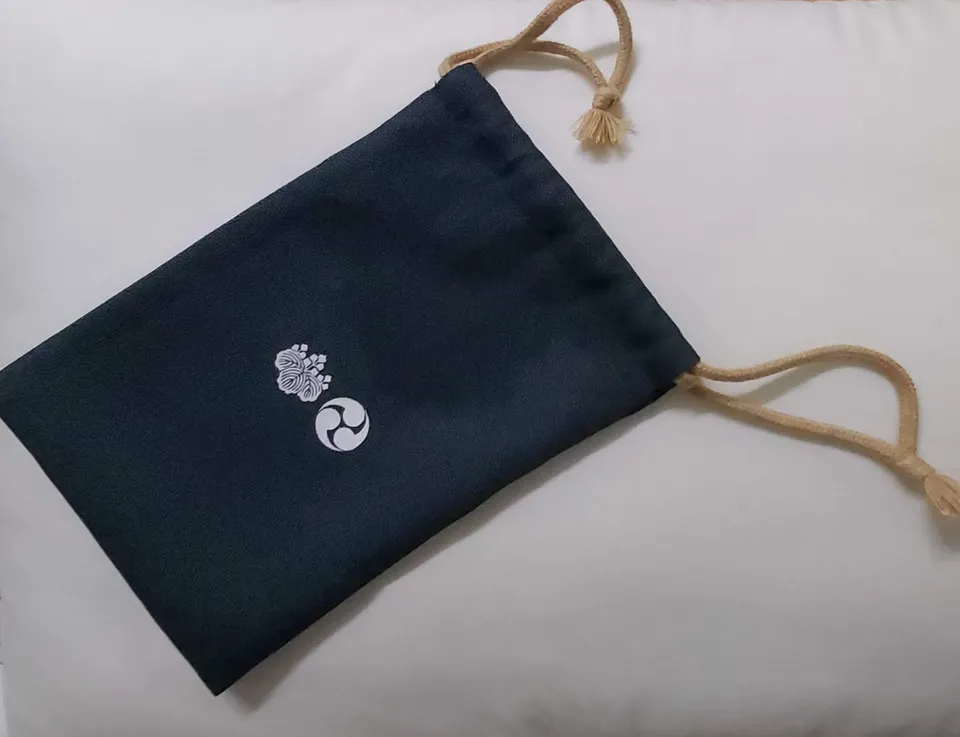
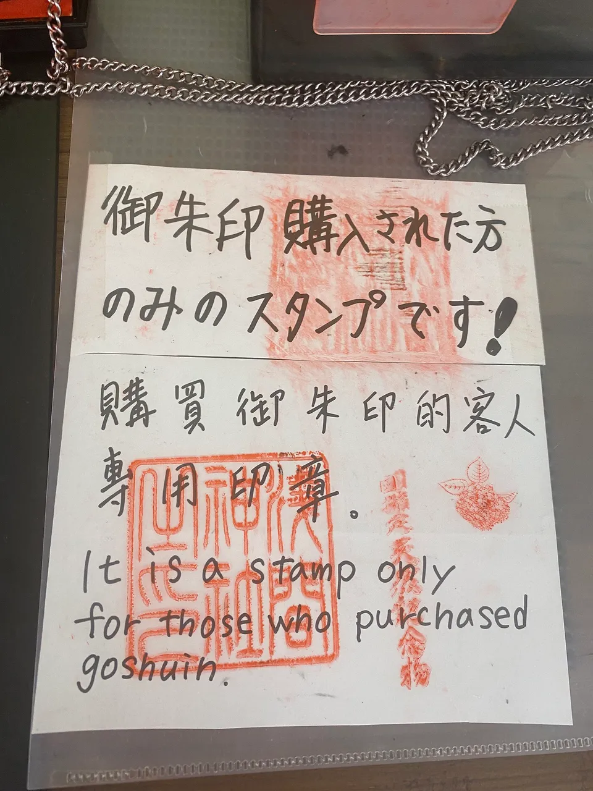

Goshuincho & stamp rally notebooks to buy before your Japan trip
You've read about goshuin — the hand-brushed temple and shrine stamps — and about Japan's endless free stamp rallies at stations and roadside stops, and now you're staring at your packing list wondering: do I need a special book for this? Which one? Can't I just use any notebook? Short answers: yes, it matters which book you bring, one book does not cover everything, and you can sort it out on Amazon before you fly. This guide compares the two books that actually cover a stamp-collecting trip — a proper accordion-fold goshuincho for temples and shrines, and a TRAVELER'S notebook for station stamps, roadside-station rallies and trip journaling — with honest notes on when buying in Japan is the better move.
How to choose: three questions
1. Goshuincho or regular notebook? (They are not interchangeable)
A goshuincho (御朱印帳) is a specific object: an accordion-folded book of thick washi paper, usually double-layered, made to absorb wet brush calligraphy and vermilion seal ink without wrinkling or bleeding through. At many temples and shrines, the priest or attendant writes directly into your book — and some will politely decline to write in an ordinary notebook. If goshuin are the goal, bring a real goshuincho; our full goshuincho guide covers how to use one once you have it.
Rubber ink stamps — eki stamps at train stations, michi-no-eki stamps at roadside stations, castle and museum stamps — are a different game. Any notebook with reasonably smooth paper works, and here a flat-opening travel journal is actually better than a goshuincho, because you can stamp anywhere on the page, add notes and tickets, and you're not spending sacred-calligraphy pages on a station mascot.
2. Size and paper
Goshuincho come in roughly two sizes: a standard format around 11 × 16 cm (about the footprint of a Japanese paperback) and a larger ōban format around 12 × 18 cm — close to B6. Bigger pages suit bold calligraphy; smaller books pack easier. For rubber stamps, note that many station stamps are large — up to around 8 cm square — so a very slim notebook forces awkward placement. Paper weight matters for stamp pads too: thin paper ghosts through.
3. Buy before you fly, or buy in Japan?
Honestly: buying a goshuincho at a famous temple or shrine is part of the fun. Many sell original-design books with their name embroidered on the cover, often at reasonable prices, and the book itself becomes a souvenir of where your collection began. The case for ordering on Amazon before the trip is practical rather than romantic: you land ready to collect from day one (airport shrines and first-morning temples included), you're not hunting a stationery shop with jet lag, and you avoid the very real scenario of arriving at a small shrine, being offered a goshuin, and having nothing to write it in. Plenty of travelers do both — start with a book from home, buy a temple-original book as the collection grows. If it's a specific Japan-exclusive design you're after, see our guide to proxy shopping services.
At a glance
| Book | Type | Best for… | Price band | Find it |
|---|---|---|---|---|
| HOTOKUDO goshuincho (Navy / Black / Green) | Accordion-fold washi goshuincho | Temple & shrine goshuin | $ | Check price → |
| TRAVELER'S notebook Regular (Black / Brown / Blue / Camel) | Leather cover + refillable insert | Station stamps, stamp rallies, trip journal | $$ | Check price → |
The "Check price" links are affiliate links (Amazon). We may earn a small commission at no extra cost to you, and it never changes what we recommend. We haven't been paid by either brand; this comparison is editorial, based on product specs and public buyer reviews.
For temple & shrine goshuin
HOTOKUDO goshuincho — a proper accordion goshuincho, delivered before you fly
This is the classic format: accordion-folded (jabara) pages of thick Japanese paper with fabric-covered boards, in navy, black or green. It's made for exactly one job — receiving hand-brushed goshuin — and that's the point. The paper takes brush ink and vermilion seals the way the priest expects, the accordion fold displays the collection as one continuous strip, and it's compact enough to live in a daypack for two weeks of temples. This is the standard size — roughly 11 × 16 cm; if you want more room for bold calligraphy, temples sell larger ōban books on site. Collecting castle stamps on the 100 Famous Castles trail as well? Many castle-goers keep a separate goshuincho just for castle seals, so a multi-color set of the same book is genuinely useful rather than a gimmick.


Photos: A goshuinchō open at five entries — Immanuelle, CC BY 4.0, via Wikimedia Commons · A drawstring bag for carrying the book — Haziq Faruqi, CC BY-SA 4.0, via Wikimedia Commons
✔ Real jabara construction priests will happily write in · thick washi made for brush ink · light and packable · three covers, so a two-book system (temples vs castles) stays organised
✘ Single-purpose — wasted on rubber stamp rallies · plain fabric covers are subdued next to the embroidered originals sold at famous temples · with heavy, wet calligraphy some ghosting onto the reverse side is possible, as with most goshuincho — many collectors simply use only the front faces
Who it suits: first-time goshuin collectors who want to land in Japan ready, and anyone running separate books for temples, shrines or castles.
Who it doesn't: travelers who mainly want station and rally stamps (get the notebook below), or those whose heart is set on a specific shrine-original design — buy that one at the source.
For station stamps, stamp rallies & the trip itself
TRAVELER'S notebook Regular — the stamp-rally and trip-journal workhorse
The TRAVELER'S notebook (from Japan's TRAVELER'S COMPANY, formerly Midori) is a simple leather cover with elastic bands holding replaceable paper inserts — and it has a devoted following among Japan travelers precisely because of stamps. The MD paper inserts take rubber-stamp ink cleanly, the notebook opens flat for two-handed stamping at a station counter, and when an insert fills up with eki stamps, michi-no-eki rally stamps, tickets and notes, you swap in a fresh one and keep the cover for the next trip. Black, brown, blue and camel leather options age visibly with use, which fans consider the feature.
✔ Opens flat and takes stamp ink well · refillable — one cover, many trips · doubles as journal, ticket-keeper and itinerary book · the slim format slips into any bag
✘ Noticeably pricier than a plain notebook, and the cost is mostly the leather cover · the narrow Regular format means the largest station stamps fill a page edge-to-edge · ships with one insert — long trips need refills · not a goshuincho: its paper isn't meant for brush calligraphy, and temples may decline to write in it
Who it suits: stamp-rally hunters, rail travelers, and anyone who wants their stamps, notes and ephemera in one book that lasts for years.
Who it doesn't: goshuin-first travelers (bring a real goshuincho), and budget packers — a plain smooth-paper notebook from any shop will collect rally stamps too, just less pleasantly.
A note on ink pads: station and roadside stamps come with their own pads, so you don't need to pack one. If you want a personal ink pad for paper-craft or journaling on the road, any small water-based stamp pad from a stationery shop (or a quick Amazon search) will do — we don't have a specific pick to recommend.
Before you collect: goshuin are not a stamp rally
A goshuin is a record of worship — proof that you visited and paid respects — not a collectible you queue for. The unwritten contract: pray first (a small offering, a bow, a moment at the main hall), then request the goshuin at the office (shuinsho or juyosho) and offer the small fee with both hands. Keep the goshuincho for goshuin only — asking a priest to write next to a cartoon station stamp is genuinely awkward for everyone. And rally stamps are the opposite: they exist to be hunted for fun, so stamp away. Using two different books isn't fussy collector behaviour; it's the local norm. More context in our goshuin guide.

Verdict: which one for your trip?
- Temples and shrines are the heart of your trip → the HOTOKUDO goshuincho. It does the one job correctly, and you can still buy a temple-original book later as your second volume.
- You're riding trains and hitting stamp rallies → the TRAVELER'S notebook Regular. Best stamp-plus-journal combination of the two, and the only one you'll still be using three trips from now.
- Doing both (most readers) → both, honestly — they don't overlap. If the budget only stretches to one: choose by which stamp you'd be sadder to miss. A goshuin can't go in the TRAVELER'S notebook; a rally stamp can go in almost anything.
- You want a Japan-exclusive design → buy at the temple, or from home via a proxy shopping service.
Where the stamps actually are: goshuin at temples & shrines → · eki stamps at train stations → · the michi-no-eki roadside stamp rally → · the 100 Famous Castles stamp trail →
Common questions
Q. Where can I buy a goshuincho before my trip to Japan?
A. Amazon carries genuine Japanese-made accordion-fold goshuincho, such as the HOTOKUDO books in this guide. In Japan itself you'll find them at temple and shrine offices, stationery shops and department stores — buying one at a famous temple is a great souvenir, but ordering ahead means you can start collecting from day one.
Q. Can I use a regular notebook for goshuin?
A. It's risky. Goshuin are brush calligraphy on wet ink, which ordinary paper handles poorly, and some temples and shrines will decline to write in anything that isn't a proper goshuincho. For rubber stamp rallies, on the other hand, any smooth-paper notebook is fine.
Q. Can I put train station stamps in my goshuincho?
A. You can physically, but it's considered poor form — a goshuincho is for records of worship, and mixing in rally stamps can make future goshuin requests awkward. Carry a second notebook for rally stamps; that's what Japanese collectors do.
Q. Is it better to buy a goshuincho on Amazon or in Japan?
A. Both are legitimate. Amazon wins on convenience: you arrive ready and skip shopping time. Japan wins on choice and meaning: temple-original designs, often embroidered with the temple's name, are sold on site and double as souvenirs. Many collectors start with a book from home and add a temple original later.
Q. What notebook is best for Japan's stamp rallies?
A. A flat-opening notebook with smooth, reasonably thick paper. The TRAVELER'S notebook Regular is the community favourite because it opens flat, takes stamp ink cleanly and is refillable — though any sturdy plain notebook works if you're keeping costs down.
Q. How much does a goshuin cost?
A. Each goshuin comes with an offering fee paid at the temple or shrine office — typically ¥300–500, though some special or seasonal goshuin cost more. Carry coins. The books themselves vary; check the current prices on Amazon or at the temple counter.
How we choose: this is an editorial comparison based on product specifications, format conventions (goshuincho construction, stamp sizes) and public buyer reviews — we list honest downsides for every product and tell you when buying in Japan is the better option. As an Amazon Associate, we earn from qualifying purchases. Some links are affiliate links — we may earn a commission at no extra cost to you, and it never changes what we recommend or the price you pay.